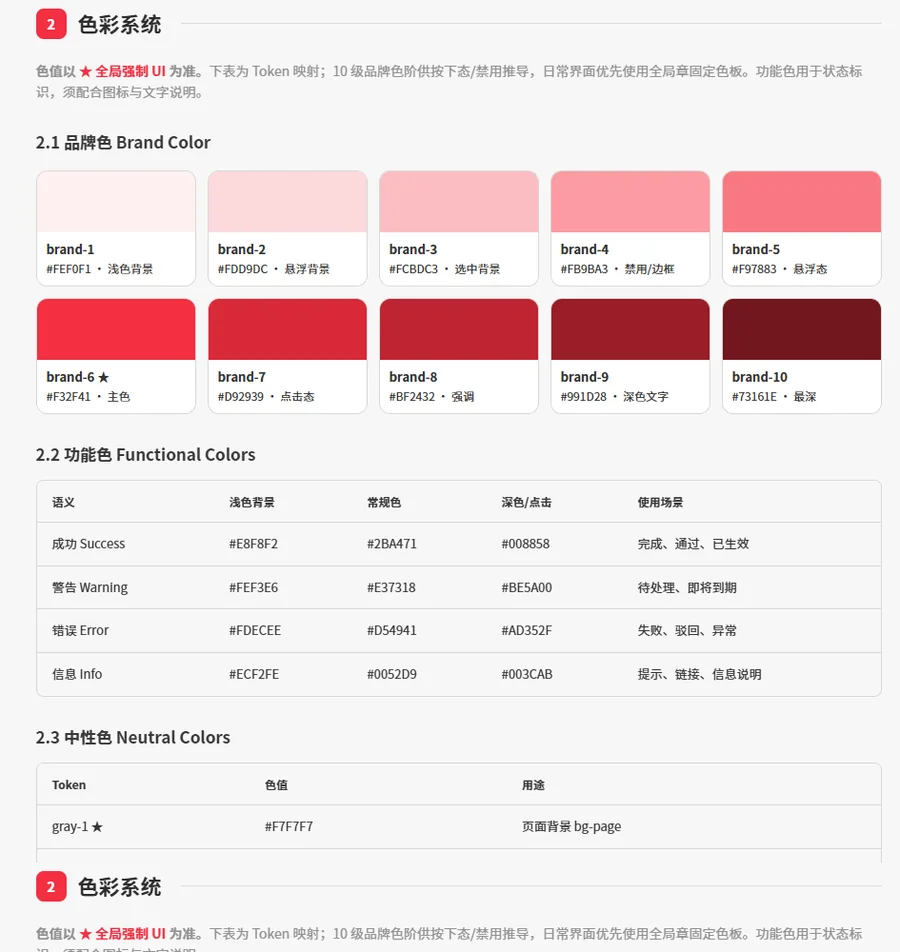
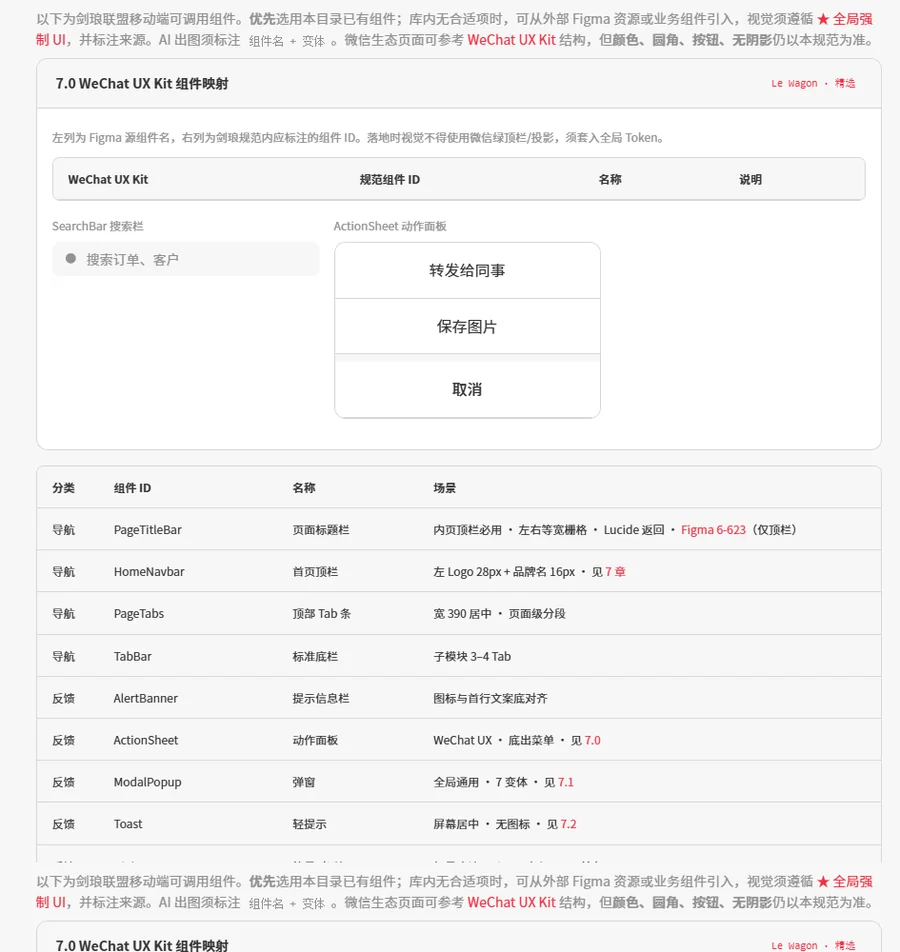

← 返回设计稿目录
Design System
剑琅联盟移动端设计规范
一套写给 AI 读的规范：把色彩、字号、间距、圆角、组件固化成 Token 与硬性约束，
让 Cursor 按规范批量修正原型里的常规页面，直接推到交付品质。
03
交付级 UI · UX
产出高保真原型
→
★
读取设计规范
AI 批量修正常规页 UI
→
04
PRD · 设计稿
核对修改至定稿
它能做什么
- 常规页面批量替换列表、详情、表单、弹窗、空状态等结构简单的页面，一次性按规范重排色彩、字号、间距、圆角与组件。
- 硬性约束可校验直角画板、无阴影无渐变、0.5px 分隔线、44px 导航、48px 按钮、按钮宽 ≤370px 等，写成条款后 AI 可逐条对照。
- 组件优先复用优先调用规范第 7 章已命名组件（PageTitleBar / TabBar / HomeNavbar 等），避免同类元素出现两套视觉。
- 口径统一同一个项目里的多个功能模块，视觉术语和 Token 只有一份，减少跨模块返工。
它做不到什么
- 强定制布局需要重新设计信息架构、或版式本身就非常规的页面，仍需人工判断。
- 新增交互概念规范只管视觉与结构，不负责定义新的操作方式或业务规则。
- 替代评审AI 改完的页面仍需按 PRD 逐条核对；规范保证的是视觉一致性，不是需求正确性。
Contents
规范目录
点任意章节直接跳到规范对应位置。
Preview
规范实景
规范以独立站点维护，浅色主题，按章节组织。

2 · 色彩系统 · 品牌色阶与语义色

7 · 组件库 · 可调用组件与命名